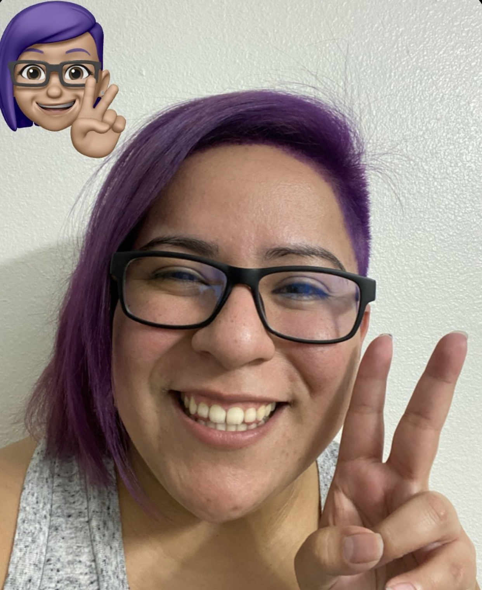

About Dora
I was born in Houston, Texas and moved to Austin, Texas in August of 2008 to attend The University of Texas. I graduated in May of 2012 with a Bachelor of Arts in Spanish and a minor in Mathematics.
I currently work for Apple as an AppleCare Senior Advisor and have experience with troubleshooting iOS, watchOS, macOS and iPadOS, as well as the hardware of it. I have a passion for helping people and love finding solutions for complex issues.
I am currently enrolled in the UT Austin BootCamp for Full Stack-Flex Development and would love to be in a role where I can utilize all my skill sets.
Languages/Technologies: JavaScript, SQL, Mongo, Git, Heroku